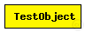
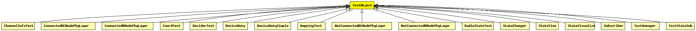

This documentation is released under the Creative Commons license
This documentation is released under the Creative Commons licenseBasis definition for all test objects.
The following diagram shows usage relationships between types. Unresolved types are missing from the diagram. Click here to see the full picture.
The following diagram shows inheritance relationships for this type. Unresolved types are missing from the diagram. Click here to see the full picture.
| Name | Type | Description |
|---|---|---|
| ChannelInfoTest | simple module |
Test network for class ChannelInfo tests. |
| ConnectedBCNodePhyLayer | simple module |
Physical layer test object which broadcasts packets and expects at least one answer. |
| ConnectedRNodePhyLayer | simple module |
Physical layer test object which expects to receive and answers at least one broadcast. |
| CoordTest | simple module |
Test network for class Coord tests. |
| DeciderTest | simple module | (no description) |
| DeviceDuty | simple module |
Test module of a two phase duty cycle device. Primarily for testing multiple accounts. |
| DeviceDutySimple | simple module |
Test module of a simple duty cycle device |
| MappingTest | simple module | (no description) |
| NotConnectedBCNodePhyLayer | simple module |
Physical layer test object which broadcasts packets and expects no answer (bacause of missing connectivity). |
| NotConnectedRNodePhyLayer | simple module |
Physical layer test object which expects not to receive broadcasts (bacause of missing connectivity). |
| RadioStateTest | simple module | (no description) |
| StateChanger | simple module | (no description) |
| StateView | simple module | (no description) |
| StateVisualize | simple module | (no description) |
| Subscriber | simple module |
test module only (subscribes to and records Host failure notifications) |
| TestManager | simple module |
Database module for TestModules. This module has to be present in you simulation as a global module if you wan't to use the class TestModule |
| TestStateSub | simple module | (no description) |
// Basis definition for all test objects. simple TestObject { }
This documentation is released under the Creative Commons license